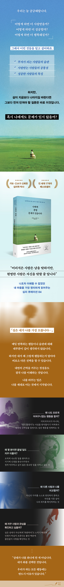

.jpg)
나에게 분명 문제가 있습니다
심리학으로 읽는 숨겨진 마음의 작동 원리 84
심리학으로 읽는 숨겨진 마음의 작동 원리 84
정가
22,000원
판매가
19,800원(10% 할인)
포인트
1,100원 (5% 적립)
배송안내
서울특별시 영등포구 은행로 11 (여의도동, 일신빌딩)
아침배송
21시까지 주문하면 내일 아침 7시 전 (9/11, 금) 도착예정
판매중
수량
1
· 해외배송 가능
· 문화비소득공제 가능
· 문화비소득공제 가능
책 간단 소개
“상대가 나를 화나게 한 게 아닙니다.
내가 화를 ‘선택’한 것입니다.
우리가 하는 모든 행동에는 반드시 이유가 있습니다.”
실은 내가 나를 가장 잘 모른다
나조차 이해할 수 없었던 내 마음을 가장 영리하게 읽어주는 심리 큐레이션
전 세계 17개국 베스트셀러
FBI, CIA가 신뢰한 심리학 박사
우리는 늘 삶의 문제를 해결하려고 애쓴다. 관계를 개선하고, 습관을 고치고, 의지를 다잡으며 더 나은 사람이 되려 한다. 하지만 정작 '왜 나는 같은 행동을 반복하는가'를 이해하려는 시간은 그리 많지 않다. 이 책은 자꾸 일을 미루고, 지나치게 남의 눈치를 보고, 물건을 제자리에 두지 못하고, 일어나지 않은 미래의 일까지 미리 걱정하는 등 우리가 무심코 반복하는 행동과 습관, 성향을 84가지 질문을 통해 살펴보고, 그 이면에 숨은 심리를 섬세하게 해부한다.
이 책에는 거창한 심리학적 질문만 등장하지 않는다. ‘왜 물건을 제자리에 놓지 않아 매번 다시 찾을까?’, ‘왜 약속 장소에 무조건 일찍 도착해야 마음이 편할까?’, ‘왜 별일이 아닌데도 자꾸 기운이 빠질까?’처럼 누구나 한 번쯤 경험해봤을 법한 행동에서 출발한다. 그러다 ‘왜 사랑받지 못할까?’, ‘왜 다른 사람과 나를 비교할까?’, ‘왜 아무도 나를 제대로 이해하지 못한다고 생각할까?’처럼 마음 깊숙한 곳의 문제로 들어간다. 덧붙여 수록된 84개의 질문을 차례대로 읽을 필요는 없다. 유독 마음에 걸리는 내용부터 골라 읽어도 좋다.
세계적 심리학자이자 FBI와 CIA 등에서 인간 심리와 행동을 교육해온 데이비드 J. 리버만 박사는 책의 제목처럼 문제를 바라보는 시선을 타인이 아닌 ‘나’에게로 돌려놓는다. 물론 내게 상처를 주는 타인, 나를 힘들게 하는 환경 등 외부의 문제도 분명 존재한다. 하지만 내 삶을 바꾸는 출발점은 결국 ‘나는 왜 이렇게 반응하는가’를 이해하는 데 있다. 이는 자신을 탓하라는 말이 아니다. 나를 정확히 이해할수록 익숙한 반응에 끌려가는 대신 다른 선택을 할 수 있기 때문이다. 문제 해결도 변화도 결국, 가장 가까우면서도 가장 낯선 ‘나’를 이해하는 데서 시작된다.
배송안내
-
배송료 : 50,000원 이상 구매 시 무료배송, 그 이하는 각 박스당 3,000원의 배송비를 부담하셔야 합니다.
(도서, 산간, 오지, 제주도, 일부지역, 설치 배송 상품 등은 배송비가 추가될 수 있습니다.) - 부피가 큰 상품은 2박스 이상으로 따로 출고되는 경우가 있으며, 변심으로 인한 반품시 2박스 이상에 대한 왕복 배송비를 부담하셔야 합니다.
- 제품에 따라 출고지가 다른 제품의 경우, 변심반품시 왕복배송비가 개별부과될 수 있습니다.
- 배송시간 : 입금확인 후 평균 2~3일 이내에 받아보실 수 있습니다. (주말, 공휴일, 천재지변 제외)
- 상품을 여러가지 구매하셨을 경우 여러 박스로 부분 포장되어 발송될 수 있으며, 배송 도착 날짜와 시간이 다를 수도 있습니다.
- 오후 2시 이후 주문 후 취소나 배송지/옵션 변경 시 고객센터로 연락 주시면 신속히 변경 처리해드립니다.
-
아래와 같은 경우 입금확인이 어려워 배송이 지연될 수 있습니다. (고객센터로 연락요망)
주문자와 입금자가 달라 확인이 되지 않는 경우 / 주문금액과 입금 금액이 다를 경우 / 주문보다 입금을 먼저 하신 경우 - 주문 후 7일 이내에 입금하지 않으면 주문이 자동 취소됩니다.
- 피스(나사못)는 동봉되지 않으며, 필요시 배송 요청 사항에 기재해주세요.
- 동봉되는 피스는 일반/목재용임으로 콘크리트, 석고 등에 사용하는 특수한 피스는 따로 준비하셔야 됩니다.
출판사 리뷰
“게으른 행동 속에 당신도 몰랐던 이유가 있습니다”
내가 나를 이해할 수 없었던 진짜 이유
분명 하지 말아야겠다고 생각했는데 또 같은 행동을 반복한다. 몇 분이면 끝날 일을 자꾸 미루고, 별것 아닌 타인의 말 한마디를 하루 종일 곱씹는다. 사랑받고 있으면서도 상대의 마음을 끊임없이 확인한다. 우리는 이런 모습을 보며 흔히 의지가 약해서, 게을러서, 성격이 예민해서 그렇다고 생각한다.
하지만 정말 그게 전부일까? 몇 분이면 끝날 일을 미루는 것은 사소한 일에 신경을 분산시키며 정작 마주하고 싶지 않은 중요한 일을 피하기 위해서일 수 있다. 잘못된 선택임을 알면서도 같은 행동을 계속하는 것은 ‘내가 틀렸다’는 사실을 받아들이기 어렵기 때문일 수 있다. 사랑과 관심을 끊임없이 확인하는 것 역시 상대가 자신에게 ‘과분하다’고 느껴 언젠가 떠날지 모른다는 불안에서 비롯될 수 있다.
『나에게 분명 문제가 있습니다』는 이처럼 사소해 보이는 행동에서 출발해 그 아래 숨은 마음의 작동 원리를 추적한다. 평범한 습관과 말, 행동에도 미처 의식하지 못한 욕구와 두려움, 불안과 자기방어가 숨어 있음을 보여준다. 책장을 넘기다 보면 자연스럽게 자신에게 묻게 된다. ‘잠깐, 나도 이러는데. 나는 대체 왜 그랬을까?’
“나는 왜 이렇게 사랑을 못 받지?”
이런 생각이 자주 든다면
웹툰 작가 기안84는 한 영상에서 군 복무 시절 자기계발서를 많이 읽었다는 이야기를 꺼냈다. ‘부자가 되는 사람들의 습관’, ‘사랑받는 사람들의 공통점’ 같은 책을 읽으며 ‘왜 나는 사람들에게 사랑을 많이 못 받지?’를 고민하던 시절이었다고 한다. 그런데 그런 그를 지켜보던 한 고참이 읽고 있던 책은 조금 달랐다. 바로 이 책 『나에게 분명 문제가 있습니다』였다.
누구나 더 사랑받고 싶고, 성공하고 싶고, 행복해지고 싶다. 그래서 우리는 사랑받는 사람들의 특징을 찾고 성공한 사람들의 습관을 따라 한다. 하지만 이 책은 질문의 방향을 완전히 뒤집는다. 더 많은 사랑을 얻는 방법을 찾기 전에 왜 사랑받지 못한다고 느끼는지, 성공하는 습관을 배우기 전에 왜 해야 할 일을 자꾸 미루는지, 인간관계의 기술을 익히기 전에 왜 타인의 말과 행동에 쉽게 흔들리는지 등을 먼저 들여다보는 것이다.
“왜 FBI·CIA는 이 심리학자에게 인간 심리와 행동을 배웠을까?”
사람의 말과 행동에는 얼마나 많은 진실이 숨어 있을까? 이 책의 저자인 데이비드 J. 리버만 박사가 오랫동안 파고든 것은 겉으로 드러난 행동 너머에 있는 인간의 심리와 동기다. 그는 책상 위에서만 인간 심리를 연구해온 학자가 아니다. 미 연방수사국(FBI), 미 중앙정보국(CIA), 미 국가안보국(NSA)을 비롯해 미군 관계자들을 대상으로 인간의 심리와 행동을 이해하고 분석하는 방법을 교육해왔고, 그가 제작한 교육 자료는 심리작전 과정 수료자들이 익혀야 하는 필수 자료로 활용되었다. 인간 행동을 이론과 실제 현장에서 오랫동안 다뤄온 그의 이력은 이 책이 일상의 사소한 행동을 집요하게 파고들 수 있는 배경이기도 하다.
관련분류
카테고리 분류
- 국내도서 > 인문 > 심리 > 주제로 읽는 심리학 > 쉽게 읽는 심리학
- 국내도서 > 자기계발 > 처세술/삶의 자세

저자 소개
저:데이비드 J. 리버만 (David J. Lieberman)
미국을 대표하는 심리학 박사이자 인간 행동과 심리 분석 분야의 세계적 권위자. 현대인의 복잡한 심리와 행동을 날카롭게 분석하고, 이를 누구나 이해하기 쉽게 풀어내는 통찰력으로 오랫동안
수많은 대중의 신뢰를 받아왔다. 특히 미 연방수사국(FBI), 미 중앙정보국(CIA), 미 국가안보국(NSA)을 비롯한 정보기관과 군 등에서 인간 심리와 행동분석을 교육했으며, 그가 제작한 교육
자료는 심리학 과정 수료생들이 반...
역: 정미화
이화여자대학교 철학과를 졸업했다. 글밥 아카데미 수료 후 현재 바른번역 소속 번역가로 활동 중이다. 옮긴 책으로는 《명상록》《원칙이 있는 부모는 흔들리지 않는다》《가장 중요한 생각만
남기는
기술》《아흔에 바라본 삶》 등이 있으며, 그 밖에 계간지 〈뉴필로소퍼〉를 번역했다.
책 속으로
부디 여러분이 이 책을 천천히 읽어보았으면 좋겠다. 나는 왜 이런 행동을 하며, 무엇을 두려워하고, 어떤 믿음이 나를 움직이는지, 이런 질문들에 하나하나 답을 하기 시작하면 삶은 더 이상 이유를 알
수 없는 사건들의 연속으로 보이지 않는다. 행동과 결과 사이의 관계가 보이고 지금까지 놓치고 있던 선택지가 나타난다. 그리고 비로소 알게 될 것이다. 모든 상황을 통제할 수는 없어도, 그 상황에 어떻게
반응할지는 스스로 선택할 수 있다는 것을. 이 책의 제목처럼 분명 우리 모두에게는 문제가 있다. 하지만 그것은 절망할 이유가 아니라 변화할 수 있다는 증거다. 여러분이 그 사실을 깨닫길 바란다.
--- p.11
당연히 이타주의는 아름다운 가치다. 하지만 타인을 돕기 위해 자신의 욕구까지 포기한다면 그것은 이타주의 이상의 의미가 있을지도 모른다. 어쩌면 다른 사람을 돕는 동안은 자신의 문제에서 벗어날 수 있기 때문일지도 모른다. 자신의 인생에 대해 고민하는 것보다 다른 사람에게 충고하는 것이 훨씬 쉬운 법이므로. 아주 극단적인 경우에는 시간뿐 아니라 삶 전체를 다른 사람을 위해 바치기도 한다. 의외로 그런 이들이 많다. 자신의 인생에는 대단한 일을 이룰 수 없다고 판단하며 타인을 돕는 일에서 삶의 목적을 찾는 것이다. 이 경우, 같은 행동처럼 보인다 해도 인류를 위해 헌신하는 사람들과는 동기가 전혀 다르다. 헌신적인 삶을 사는 사람들은 열정이 넘칠뿐더러 다른 사람을 돕는 것이 삶의 목적이라고 생각해서 그렇게 하는 것이다. 하지만 전자는 자신의 삶을 외면하기 위해 타인의 삶에 몰두한다. 이런 문제를 겪는 이들은 자신이 가치 있는 존재라거나 스스로 생산적인 삶을 꾸려갈 능력이 있다고 판단하지 않으므로 본인의 열정과 즐거움을 기꺼이 포기한다. 스스로 가치 없는 존재라고 생각하고 열등감에 시달리는 탓에 자존감이 다른 사람의 견해로 인해 쉽게 흔들린다. 자신에 대한 스스로의 평가보다 남들의 평가에 더 신경을 쓴다.
---pp.38-39
만약 거울을 통해 자신의 모습을 확인하는 것을 유일한 심리적 검증 수단으로 여긴다면, 그것은 인정이나 칭찬을 받거나 호의적인 말을 듣는 것을 어색해한다는 의미일 수도 있다. 이제는 상대방이 건넨 칭찬을 의심하고 싶은 충동을 억누르고 있는 그대로 받아들이는 법을 배워보자. 만약 회사에서 “회의용 차트를 정말 잘 만들었네요”라는 칭찬을 들었다면 “고맙습니다. 하지만 별거 아니었어요. 시간이 더 있었다면 훨씬 더 잘했을 거예요”라고 말하는 대신 “감사합니다”라고 대답하는 것이다. 그렇게 함으로써 자신을 인정해준 사람을 불편하게 만들지 말자. 상대방도 칭찬을 전하는 즐거움을 느끼게 해줘야 한다.
--- p.112
우리는 많은 것을 통제할 수 있지만 분명히 통제할 수 없는 것도 존재한다. 연인에게 줄 선물을 사면서 그의 호의적인 반응을 기대할 수는 있겠지만 반드시 그런 반응이 나오도록 만들 수는 없다. 직원들에게 프로젝트 마감일이 일주일 앞당겨진다고 알려야 한다면 충격을 완화할 방법을 계획할 수는 있어도 직원들이 환호할 거라고 장담할 수는 없다. 모든 일을 인간의 힘만으로 통제할 수는 없다. 그러니 어려운 상황에 유연하게 대처하는 법을 배우자. 먼저 최선을 다하고 나서 어떤 일이 벌어지든 대처할 준비를 하자. 미국 신학자인 라인홀드 니버의 기도문 ‘평온을 비는 기도’를 떠올려보자. “신이시여, 제가 바꿀 수 없는 것에 대해서는 그것을 받아들이는 평정을 허락해주시고, 제가 변화시킬 수 있는 것에 대해서는 그것을 변화시키는 용기를 주시고, 변화시킬 수 있는 것과 없는 것을 가려낼 수 있는 지혜를 주소서.” 이 기도문을 암기하거나 적어서 매일 볼 수 있는 곳에 두자. 어떤 일로 불안감이 들기 시작하면 스스로에게 물어보자. “이것은 내가 통제할 수 있는 일인가?” 통제할 수 있는 일이면 최선을 다했는지 행동을 되돌아보자. 최선을 다했다면 마음을 편히 가지고, 그렇지 못했다면 마음이 편해질 수 있도록 필요한 행동을 하자. 하지만 자신이 통제할 수 없는 상황이 문제라면 불확실성을 받아들이는 법도 배워야 한다. 가장 높은 단계의 심리적 안정감은 불확실성을 삶의 일부로 받아들이는 순간 얻을 수 있다. 확실성과 영원함에 집착하는 것은 삶이 슬픔으로 가는 가장 확실한 길이다.
---pp.174-175
일반적으로 자아 이미지가 약하고 자신은 행운을 받을 자격이 없다는 생각이 들면 자신의 자아 이미지에 맞게 처신하려고 행동을 바꾸기도 한다. 다시 말해 자아 이미지가 생각과 행동에 중대한 영향을 미치는 것이다. 예를 들어 골프를 치고 있다고 해보자. 전체 18홀 중 9홀을 마쳤는데 만약 지금 이런 흐름대로 계속 치면 최고의 스코어를 기록할 것 같은 기분이다. 하지만 높은 스코어가 보이자 오히려 부담이 생기기 시작한다. ‘내가 이렇게 잘할 리 없어’라는 생각이 들며 긴장감이 생긴다. 그럼 어떻게 될까? 갑자기 흐름이 바뀌면서 무심결이었지만 자신이 예상했던 스코어, 더 정확히 말하면 자신이 받을 만한 스코어에 그치고 만다. 간단히 말해, 스스로 생각하는 골프 실력에 걸맞은 결과를 얻은 것이다. 본인의 예상을 현실로 만들고, 왜곡된 의미이지만 안정감을 얻은 것이다. 생각에서 벗어나지 않는 결과가 나왔으니 아무 문제가 없는 것이다. 삶의 균형은 흔들리지 않았고 오늘은 놀랄 만한 일이 없었기 때문이다.
--- pp.186-187
상대와의 관계가 안정적인지 끊임없이 확인하려는 욕구는 불안감에서 비롯된다. 구체적으로 말하자면 이런 감정은 상대방이 자신에 비해 ‘과분’하다고 느끼는 데서 생겨난다. 스스로 이런 불균형을 느끼고 있기 때문에 상대방도 자신이 ‘과분한 사람’이라는 사실을 알아차리고 떠날까 봐 두 사람의 관계를 끊임없이 확인하려 한다. 내심 상대가 이 관계에서 손해를 보고 있다고 생각하는 것이다. 이런 불안감은 상대의 말과 행동에서 관계의 이상 신호를 끊임없이 찾게 만든다. 모든 대화에서 숨겨진 의미를 찾으려고 의심하고 분석하며, 상황을 객관적으로 파악하지 못한 채 사소한 의견 차이도 관계 전체의 문제로 확대해서 받아들이기도 한다. 순간순간 일어나는 일을 바탕으로 두 사람의 관계가 괜찮은지 판단하기 때문에 사소한 일도 과장해서 받아들이는 경향이 있다. 하지만 이들이 간과하는 것이 있다. 이제까지 자신이 받았던 사랑은 계산에 넣지 않는다. 상대방이 상처 주는 말을 했다는 사실에만 주목한 나머지 그가 더 이상 나를 소중하게 여기지 않는다고 해석해버린다. 지금 이 순간 일어난 일만으로 관계를 판단하기 때문에 상대방이 하는 말에 과잉 반응하는 경향이 있다. 작은 말다툼이라도 생기면 관계 전체를 다시 평가하고, 둘의 관계가 되돌릴 수 없을 정도로 악화되었다는 결론까지 내린다. 심지어 단지 애정의 수준을 ‘확인하기 위해서’ 사소한 부탁이나 요청을 해서 상대방을 시험하는 일도 있다.
--- pp.312-313
--- p.11
당연히 이타주의는 아름다운 가치다. 하지만 타인을 돕기 위해 자신의 욕구까지 포기한다면 그것은 이타주의 이상의 의미가 있을지도 모른다. 어쩌면 다른 사람을 돕는 동안은 자신의 문제에서 벗어날 수 있기 때문일지도 모른다. 자신의 인생에 대해 고민하는 것보다 다른 사람에게 충고하는 것이 훨씬 쉬운 법이므로. 아주 극단적인 경우에는 시간뿐 아니라 삶 전체를 다른 사람을 위해 바치기도 한다. 의외로 그런 이들이 많다. 자신의 인생에는 대단한 일을 이룰 수 없다고 판단하며 타인을 돕는 일에서 삶의 목적을 찾는 것이다. 이 경우, 같은 행동처럼 보인다 해도 인류를 위해 헌신하는 사람들과는 동기가 전혀 다르다. 헌신적인 삶을 사는 사람들은 열정이 넘칠뿐더러 다른 사람을 돕는 것이 삶의 목적이라고 생각해서 그렇게 하는 것이다. 하지만 전자는 자신의 삶을 외면하기 위해 타인의 삶에 몰두한다. 이런 문제를 겪는 이들은 자신이 가치 있는 존재라거나 스스로 생산적인 삶을 꾸려갈 능력이 있다고 판단하지 않으므로 본인의 열정과 즐거움을 기꺼이 포기한다. 스스로 가치 없는 존재라고 생각하고 열등감에 시달리는 탓에 자존감이 다른 사람의 견해로 인해 쉽게 흔들린다. 자신에 대한 스스로의 평가보다 남들의 평가에 더 신경을 쓴다.
---pp.38-39
만약 거울을 통해 자신의 모습을 확인하는 것을 유일한 심리적 검증 수단으로 여긴다면, 그것은 인정이나 칭찬을 받거나 호의적인 말을 듣는 것을 어색해한다는 의미일 수도 있다. 이제는 상대방이 건넨 칭찬을 의심하고 싶은 충동을 억누르고 있는 그대로 받아들이는 법을 배워보자. 만약 회사에서 “회의용 차트를 정말 잘 만들었네요”라는 칭찬을 들었다면 “고맙습니다. 하지만 별거 아니었어요. 시간이 더 있었다면 훨씬 더 잘했을 거예요”라고 말하는 대신 “감사합니다”라고 대답하는 것이다. 그렇게 함으로써 자신을 인정해준 사람을 불편하게 만들지 말자. 상대방도 칭찬을 전하는 즐거움을 느끼게 해줘야 한다.
--- p.112
우리는 많은 것을 통제할 수 있지만 분명히 통제할 수 없는 것도 존재한다. 연인에게 줄 선물을 사면서 그의 호의적인 반응을 기대할 수는 있겠지만 반드시 그런 반응이 나오도록 만들 수는 없다. 직원들에게 프로젝트 마감일이 일주일 앞당겨진다고 알려야 한다면 충격을 완화할 방법을 계획할 수는 있어도 직원들이 환호할 거라고 장담할 수는 없다. 모든 일을 인간의 힘만으로 통제할 수는 없다. 그러니 어려운 상황에 유연하게 대처하는 법을 배우자. 먼저 최선을 다하고 나서 어떤 일이 벌어지든 대처할 준비를 하자. 미국 신학자인 라인홀드 니버의 기도문 ‘평온을 비는 기도’를 떠올려보자. “신이시여, 제가 바꿀 수 없는 것에 대해서는 그것을 받아들이는 평정을 허락해주시고, 제가 변화시킬 수 있는 것에 대해서는 그것을 변화시키는 용기를 주시고, 변화시킬 수 있는 것과 없는 것을 가려낼 수 있는 지혜를 주소서.” 이 기도문을 암기하거나 적어서 매일 볼 수 있는 곳에 두자. 어떤 일로 불안감이 들기 시작하면 스스로에게 물어보자. “이것은 내가 통제할 수 있는 일인가?” 통제할 수 있는 일이면 최선을 다했는지 행동을 되돌아보자. 최선을 다했다면 마음을 편히 가지고, 그렇지 못했다면 마음이 편해질 수 있도록 필요한 행동을 하자. 하지만 자신이 통제할 수 없는 상황이 문제라면 불확실성을 받아들이는 법도 배워야 한다. 가장 높은 단계의 심리적 안정감은 불확실성을 삶의 일부로 받아들이는 순간 얻을 수 있다. 확실성과 영원함에 집착하는 것은 삶이 슬픔으로 가는 가장 확실한 길이다.
---pp.174-175
일반적으로 자아 이미지가 약하고 자신은 행운을 받을 자격이 없다는 생각이 들면 자신의 자아 이미지에 맞게 처신하려고 행동을 바꾸기도 한다. 다시 말해 자아 이미지가 생각과 행동에 중대한 영향을 미치는 것이다. 예를 들어 골프를 치고 있다고 해보자. 전체 18홀 중 9홀을 마쳤는데 만약 지금 이런 흐름대로 계속 치면 최고의 스코어를 기록할 것 같은 기분이다. 하지만 높은 스코어가 보이자 오히려 부담이 생기기 시작한다. ‘내가 이렇게 잘할 리 없어’라는 생각이 들며 긴장감이 생긴다. 그럼 어떻게 될까? 갑자기 흐름이 바뀌면서 무심결이었지만 자신이 예상했던 스코어, 더 정확히 말하면 자신이 받을 만한 스코어에 그치고 만다. 간단히 말해, 스스로 생각하는 골프 실력에 걸맞은 결과를 얻은 것이다. 본인의 예상을 현실로 만들고, 왜곡된 의미이지만 안정감을 얻은 것이다. 생각에서 벗어나지 않는 결과가 나왔으니 아무 문제가 없는 것이다. 삶의 균형은 흔들리지 않았고 오늘은 놀랄 만한 일이 없었기 때문이다.
--- pp.186-187
상대와의 관계가 안정적인지 끊임없이 확인하려는 욕구는 불안감에서 비롯된다. 구체적으로 말하자면 이런 감정은 상대방이 자신에 비해 ‘과분’하다고 느끼는 데서 생겨난다. 스스로 이런 불균형을 느끼고 있기 때문에 상대방도 자신이 ‘과분한 사람’이라는 사실을 알아차리고 떠날까 봐 두 사람의 관계를 끊임없이 확인하려 한다. 내심 상대가 이 관계에서 손해를 보고 있다고 생각하는 것이다. 이런 불안감은 상대의 말과 행동에서 관계의 이상 신호를 끊임없이 찾게 만든다. 모든 대화에서 숨겨진 의미를 찾으려고 의심하고 분석하며, 상황을 객관적으로 파악하지 못한 채 사소한 의견 차이도 관계 전체의 문제로 확대해서 받아들이기도 한다. 순간순간 일어나는 일을 바탕으로 두 사람의 관계가 괜찮은지 판단하기 때문에 사소한 일도 과장해서 받아들이는 경향이 있다. 하지만 이들이 간과하는 것이 있다. 이제까지 자신이 받았던 사랑은 계산에 넣지 않는다. 상대방이 상처 주는 말을 했다는 사실에만 주목한 나머지 그가 더 이상 나를 소중하게 여기지 않는다고 해석해버린다. 지금 이 순간 일어난 일만으로 관계를 판단하기 때문에 상대방이 하는 말에 과잉 반응하는 경향이 있다. 작은 말다툼이라도 생기면 관계 전체를 다시 평가하고, 둘의 관계가 되돌릴 수 없을 정도로 악화되었다는 결론까지 내린다. 심지어 단지 애정의 수준을 ‘확인하기 위해서’ 사소한 부탁이나 요청을 해서 상대방을 시험하는 일도 있다.
--- pp.312-313
|
|
-
★★★★★
내가 나를 가장 모릅니다
실은 내가 나를 가장 모릅니다. 왜 사랑받고 싶으면서도 사람을 밀어내는지, 해야 할 일을 알면서도 미루는지. 작은 말 한마디에 오래 흔들리는지. 그래서 우리는 같은 실수를 반복하고 상처를 되풀이합니다. 책의 목차를 읽으면서 두 가지 생각이 들었습니다… 더보기2명이 이 리뷰를 추천합니다. -
★★★★★
나에게 문제를 발견하고, 나를 먼저 이해하는 심리학 책
본 리뷰는 도서를 제공받아 작성되었습니다. 심리학 전문서에 가깝지만 자기 안의 감정을 하나씩 짚어주는 질문들 덕분에 읽는 내내 나를 돌아보게 됩니다. 읽다 보면 어느 순간 남 얘기가 아니라 내 얘기를 하고 있다는 걸 깨닫게 돼요… 더보기1명이 이 리뷰를 추천합니다. -
★★★★★
나를 돌아보는 시간을 만들어준 책
출판사로부터 제공받아 솔직하게 작성한 리뷰입니다. 목차를 보고부터 괜히 뜨끔했던 책이에요. 살다 보면 “왜 나는 또 이러지” 하고 스스로에게 묻게 되는 순간이 있는데, 이 책은 그런 행동과 마음을 심리학적으로 들여다보게 해줍니다… 더보기1명이 이 리뷰를 추천합니다. -
★★★★★
변화하는 나
어리석은 사람은 남을 탓하지만 현명한 사람은 자신을 탓할 줄 압니다. 이 책의 초점은 나의 행동, 습관, 성향을 살펴보고 나의 심리를 파악해나간다는 점이었습니다. 앞으로 한 달 동안 크게 중요하지 않은 사소한 결정은 전부 줄여 던지기로… 더보기 -
★★★★★
나는 나를 잘 모르고 있었다
도서를 제공받고 솔직하게 작성한 독후감입니다. 이 책에는 84가지의 ‘왜?’가 나옵니다. 왜 그 행동을 하게 됐는지, 왜 그 생각을 하게 됐는지 84가지로 나뉘어 분석했어요. 내가 해당되는 것들이 여러 개 있었는데, 이유에 대해서 딱히 생각해보지 않았던 부분들이었어요… 더보기
아직 작성된 구매 리뷰가 없습니다.
-
★★★★★
내가 나를 가장 모릅니다
실은 내가 나를 가장 모릅니다. 사진과 함께 남긴 리뷰예요. 책의 목차를 읽으면서 두 가지 생각이 들었습니다… 더보기2명이 이 리뷰를 추천합니다.